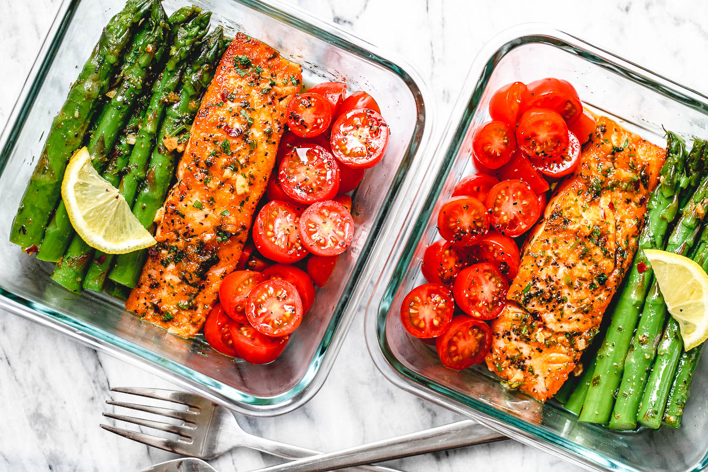

Meal Prep Salmon and Asparagus in Garlic Lemon Butter Sauce

5 Minute Meal-Prep Garlic Butter Salmon with Asparagus – This easy garlic butter salmon meal prep with asparagus is a great way to guide yourself into a healthier lifestyle. Flaky salmon cooked in a garlic butter sauce and served with asparagus is an easy low carb dish that is ready in about 15 minutes, perfect for your weekly meal prep. If you’re new to meal prepping, please check out our meal-prep archives to see a whole bunch of our other delicious meal-prep recipe ideas.
INGREDIENTS
- 1 medium salmon fillet, cut in 3 or 4 chunks
- 2 bunches of asparagus, rinsed and trimmed
- 1 teaspoon olive oil
- 2 teaspoons minced garlic
- 1/2 cup (125ml) low-sodium vegetable broth (or white wine)
- 1/2 stick butter
- 1 cup halved cherry or grape tomatoes
- 1/2 small red onion, minced
- 1 tablespoon hot sauce, optional (we used Sriracha)
- Juice of 1/2 lemon
- 1 tablespoon minced parsley (or cilantro)
- Crushed red chili pepper flakes, optional
Slices of lemon, for garnish
DIRECTIONS
- To make the salmon meal prep: Combine halved cherry tomatoes with olive oil, minced red onion, salt and pepper. Marinate in a shallow plate or bowl while cooking salmon and asparagus.
- Season salmon with salt and pepper. Let sit while you prepare the asparagus.
- Wash and trim the ends of the asparagus, then blanch them in boiling water for 2- 3 minutes then soak in ice water to stop cooking. This way they will cook faster and evenly in the skillet. You can skip this step if you have very thin asparagus. Drain and set aside.
- Heat olive oil in a large cast iron skillet over medium-low heat. Gently cook salmon on both sides until golden brown. Remove the salmon fillets from the skillet and set aside to a plate.
- In the same skillet over medium heat, add minced garlic then deglaze with vegetable broth (or wine). Bring to a simmer. Add butter, lemon juice, hot sauce, parsley. Give a quick stir to combine.
- Add the drained blanched asparagus and toss for 2 minutes to cook it up. Add salmon back to the pan and reheat for another minute.
- Divide the meal prep salmon and asparagus into meal prep containers, add marinated tomatoes, and store in the refrigerator for up to 5 days.
TIPS FOR THE MEAL PREP SALMON AND ASPARAGUS RECIPE
- Depending on the thickness of your asparagus, you might want to skip blanching.
- 2 bunches of asparagus, rinsed and trimmedYou can enrich the sauce by adding white wine.
HOW TO COOK SALMON FOR MEAL PREP
You don’t have to cook salmon all the way. Since salmon isn’t like chicken and can be eaten slightly undercooked anyways, you can almost cook the salmon all the way through. That way, when you’re reheating the salmon later, it will not be overcooked, dry and crumbly. This goes for the asparagus as well – slightly undercook now for perfectly cooked asparagus later. When ready to eat, reheat your salmon meal prep in the microwave for 2 minutes. If you prefer enjoying your salmon and asparagus cold, then yes, you can cook it all way through.
Well, speaking of meal prepping you are actually making the food to enjoy it later on! You can store the meal prep salmon and asparagus for up to 5 days in the refrigerator. Use separate containers for easier portioning and you’ll have one of these amazingly healthy and delicious meals waiting for you all week!